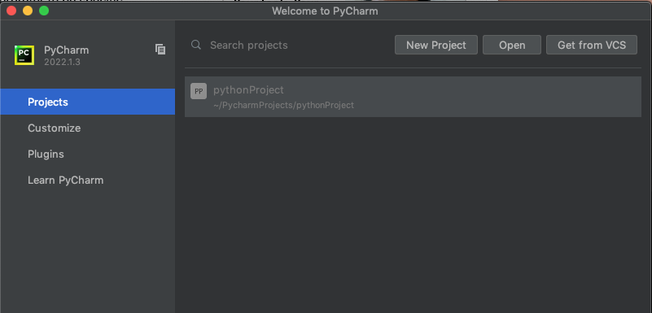
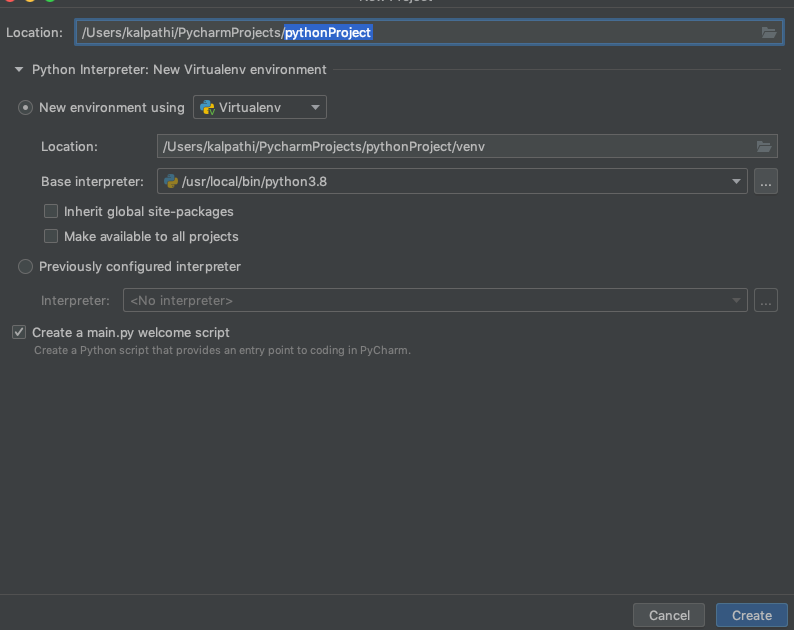
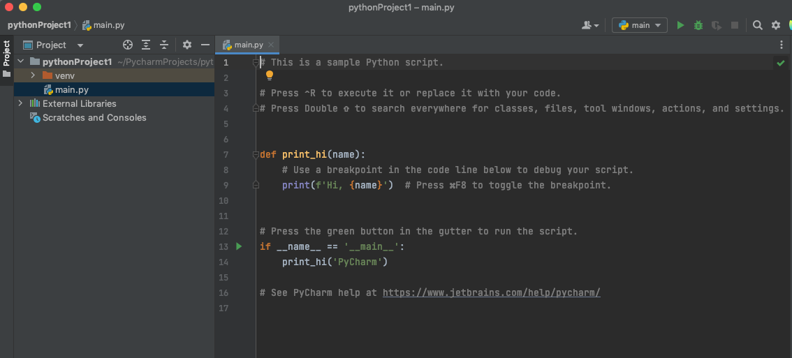
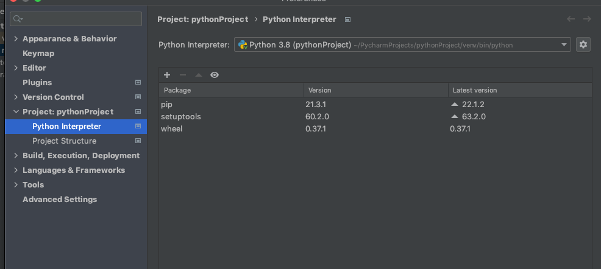
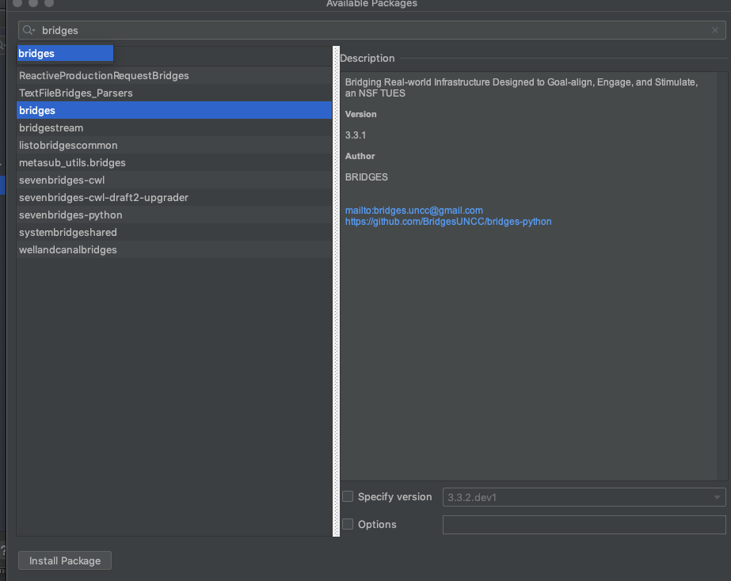
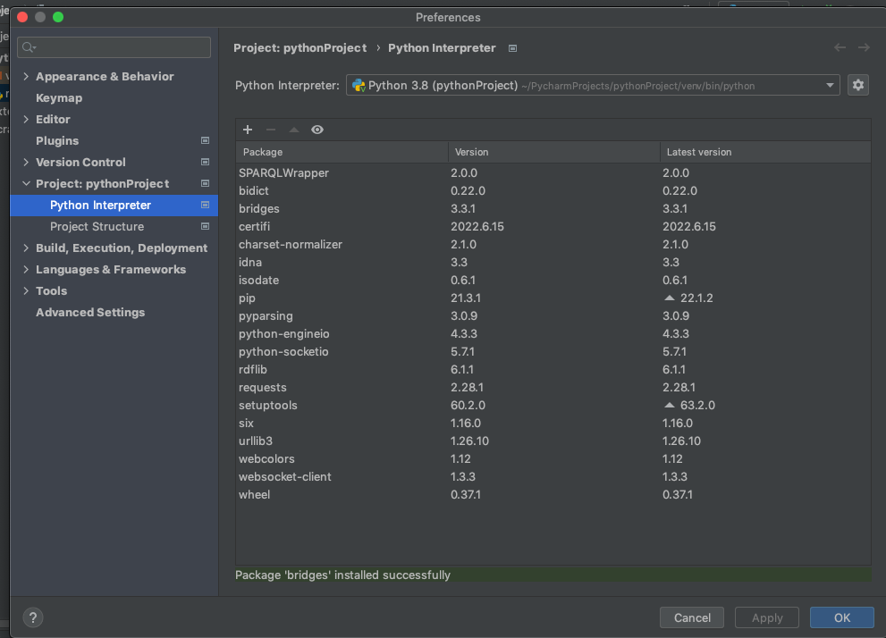
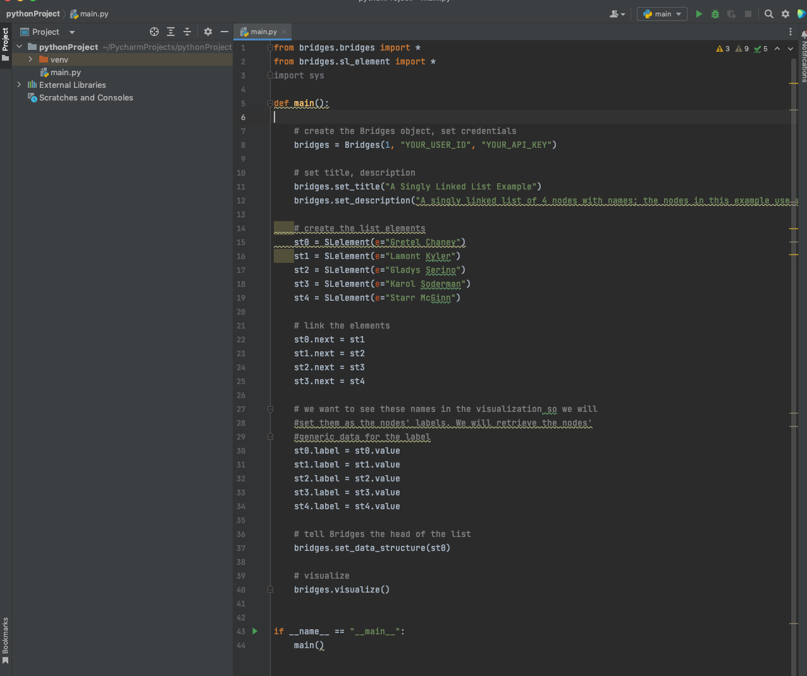
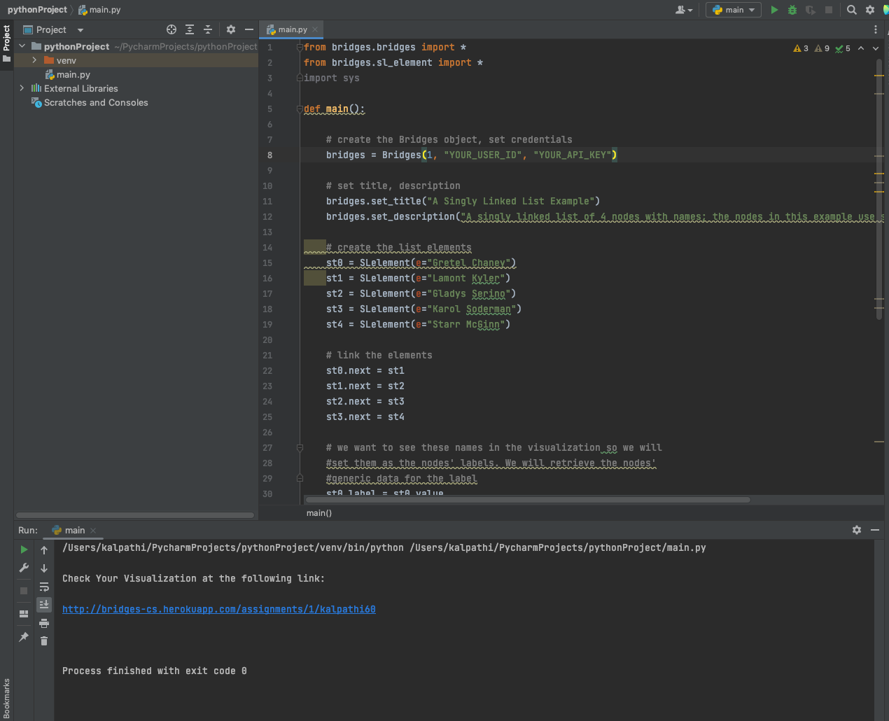

Step 1: Install PyCharm
- If you do not have Pycharm
installed,
download Pycharm
and install it on your computer.
Step 2: Create Bridges Account
- Visit the Bridges
main page and create yourself an account
by clicking the login button
on the top navigation bar. Then, click 'Sign Up!' at the bottom of the new window. Please ensure that
your user id is devoid of spaces, as it will be
used as part of the web link for your projects.
After creating your account, click on the profile tab
in the upper right corner to view your
account details. In this view, you will see your
API Key; you will need this API key later in the
tutorial(as well as in every BRIDGES program
you write).
Step 3a: Pycharm Environment Setup
- Open the Pycharm application, you should see something like this:
|

|
Step 3b: Create project, check Python interpreter,
environment location
- Create a new project, name it appropriately, note its location on your
filesystem and click Create
- Note: your system should have python 3.8 or higher installed for
BRIDGES to work properly.
- Make sure that Pycharm has an interpreter by looking at the entry
for Base interpreter in this window
|

|
| Step 3c: Running Hello World. You will see a
default python program; You should be able to run this by clicking the
play button on the top right
|

|
Step 3d: Import Bridges Packages
Next we will import the bridges and related packages as follows:
- On OSX, Click on the Pycharm Application button in the top left corner. On MS Windows, it is under File-->Settings.
Then click on
Python Interpreter. You will see the
adjacent image with the default packages required by the base system.
- We will next import the BRIDGES packages; for this click on the +
button and you will see another popup window with a search bar
at the
top; type bridges (see adjacent window), and once you click on that
you can hit the Install Package at the bottom left to install
the Bridges package. You will see the packages installed as in the
adjacent image. Go back to the main code window.
|



|
Step 4a: Load and run an example BRIDGES program
- Go to this
BRIDGES Tutorial site and copy/paste a python tutorial program into
the main window.
- Set an assignment number, and your credentials in the line that creates
the Bridges object at the beginning of the program.
- Run the program by hitting the play
- You will see a link printed on the console. Use that to visualize the
output.
|


|
Running additional BRIDGES programs.
- Look at the BRIDGES Tutorials pages for additional BRIDGES programs.
- When you create subsequent BRIDGES programs, you can reuse the environment you
created above for your first BRIDGES program. During the
environment setup (Step 3b) pick the environment you created
for the first project. This will let you use the BRIDGES packages
from the environment; else you will have to install BRIDGES again!
|
|